GP Drawing Desk documentation
Panels and additionals Gizmos which comes with addon
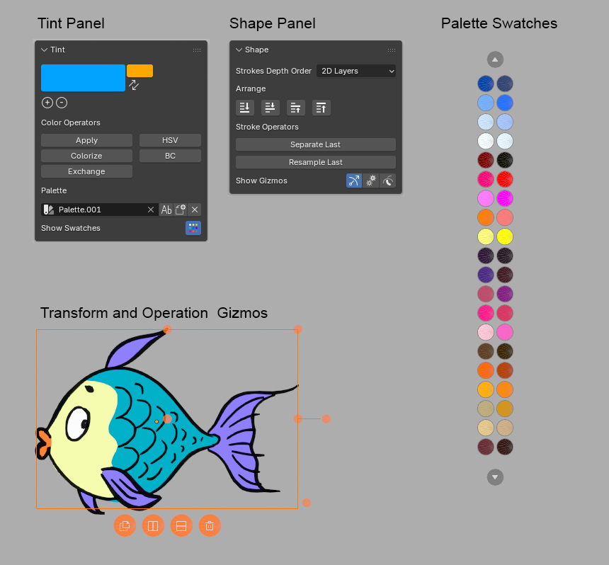
Tint panel
Brush Color

Color operators
Select strokes and change its color using different operators.

After executing operator you will find its options (working live) in the Adjust Last Operation panel in the left bottom corner of 3d View.
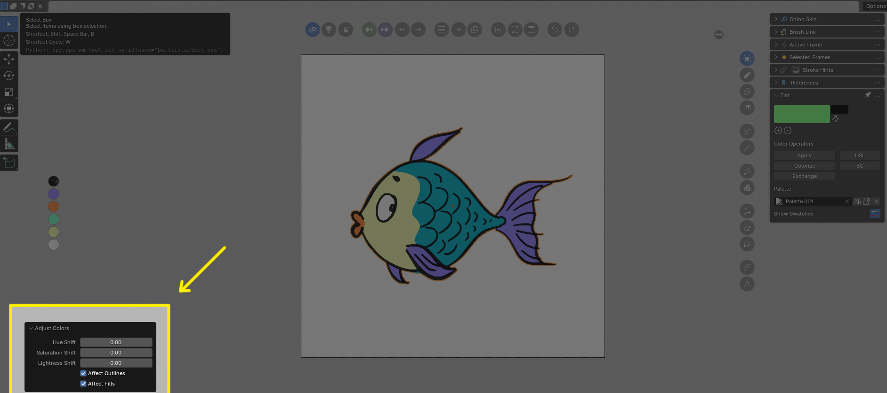
Apply
Applies current brush color onto selected strokes. If you Apply color without any key pressed it applies to fills and outlines If you want to apply color to fills only use CONTROL key modifier. If you want to apply color to outlines only use SHIFT key modifier.
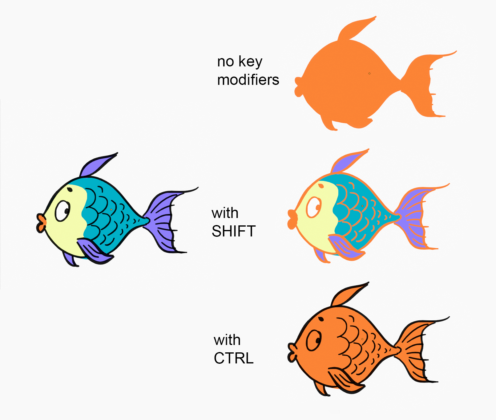
Colorize
Apply color, keeping lightness of drawing

Exchange
Exchanges source color to target color

HSL
Hue / Saturation / Lightness sliders

BC
Brightness / Contrast sliders

Palette options

Create New Palette popup window

You can create: - new empty palette - palette based on visible grease pencil image - import any palette from other .blend file
Example of palettes generated by Create New Palette -> Current Grease Pencil:
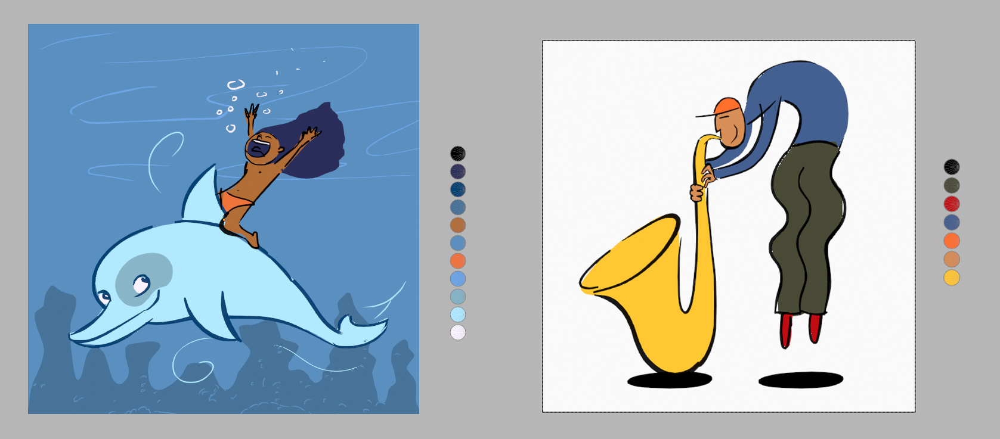
Show Swatches toggle button
With this button you can switch on/off palette swatches in 3d View
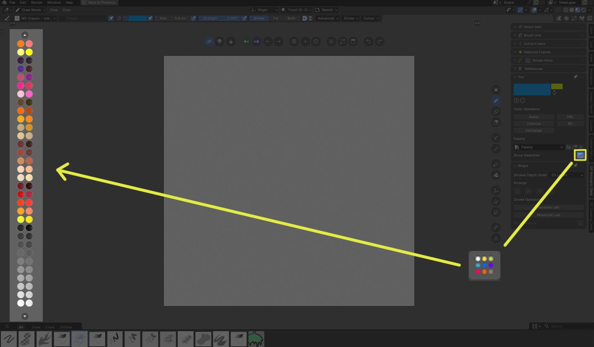
Use this swatches to change current brush color when in Paint mode or to fast change selected stroke colors when in Edit mode (with CONTROL key it changes fills, with SHIFT key it changes outlines).

Shape panel
Arrange
Arrange strokes in classic way, to change their order (works only in 2D Layers mode)
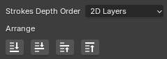
Stroke operators
Additional stroke operators, in Edit mode they works on selected strokes, in other modes works on last drawn stroke (it makes life easier when you want to change last drawn stroke without going into Edit mode)
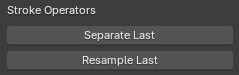
Separate
Separates strokes into new Grease Pencil object. Works better than default Separate operator.
Resample
Makes Simplify and Smooth operator on stroke to make it more regular, with option to close stroke. This prepres stroke for better sculpting.
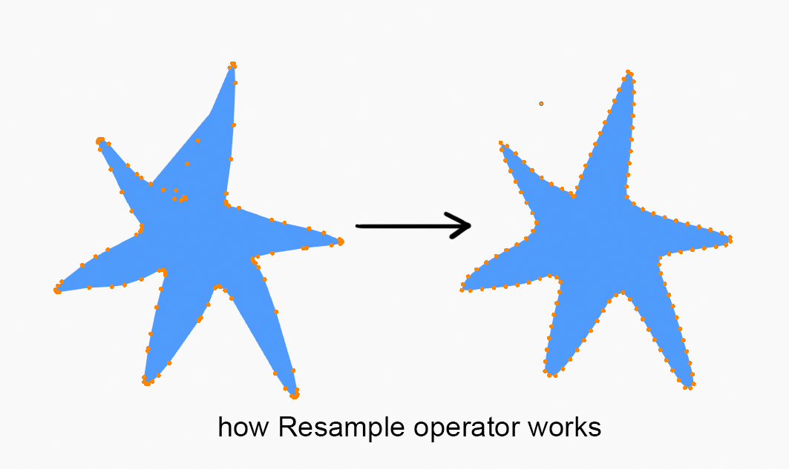
Show Gizmos buttons
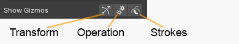
Transform
Toggles classic 2D transform gizmos drawn around selection
Operation
Toggles Operation gizmos (Duplicate, Flip Horizontal, Flop Vertical, Delete buttons)
Strokes
Toggles native strokes viibility in Edit and Sculpt mode
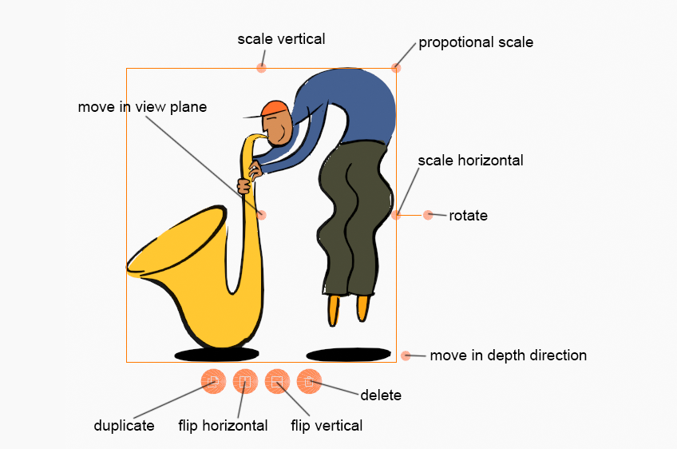
Preferences
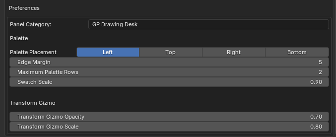